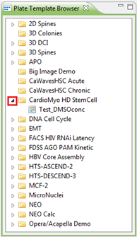

The Plate Template Browser view gives you an overview of all the plate layout templates that have been created, grouped per protocol.
You can see the template list of a protocol group by clicking on the triangle next to the group.
Double-clicking a template will open the Plate Template Editor where you can edit the template.
To open the Plate Template Browser View, go to Window > Show View > Other > Plate Template Browser.

For more information about plate definitions and plate layout templates, see Howto: Link plate definitions.